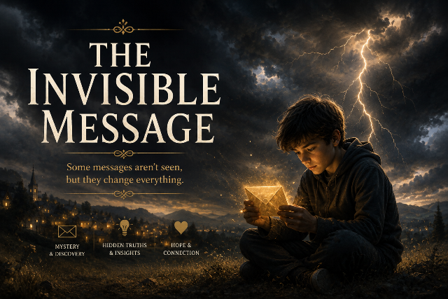

A Story of Presence of Mind · Invisible Ink
A science lesson about lemon juice and hidden letters. A kidnapping that seemed impossible to survive. And a single folded page that carried a girl's voice all the way from a locked warehouse to a railway station — until someone finally warmed it near a lamp.